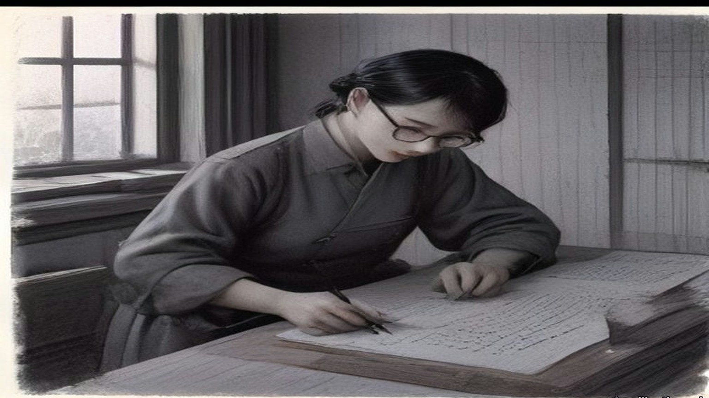
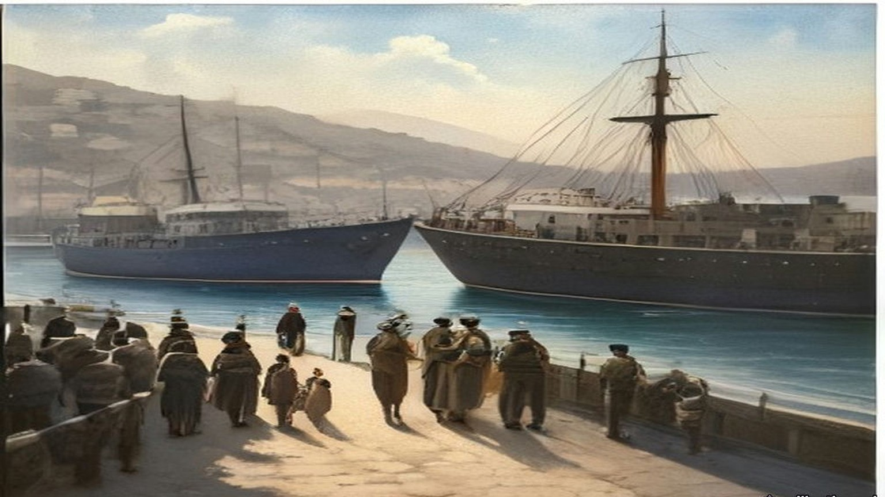
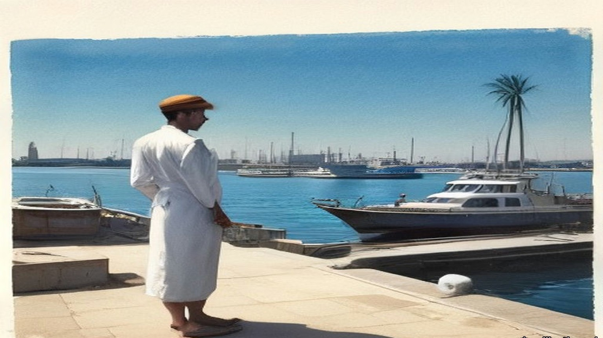
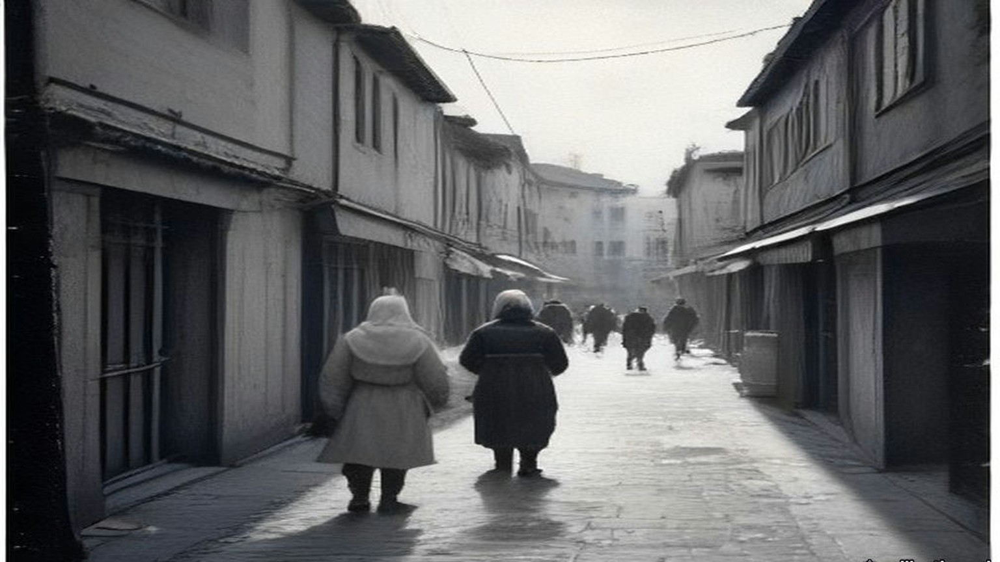
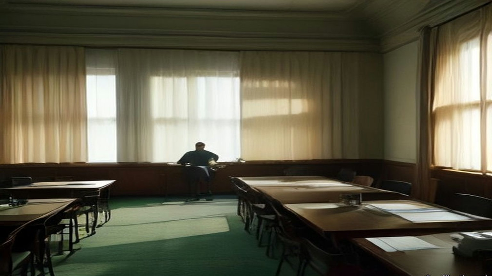

Chapter 28
Full and Final Settlement, 1943–1958
Chungking, Westminster, Nablus, Ismailia, Port Said, Rome, Peking and Canton, January 1943 to July 1958
The Ministry of Foreign Affairs, Chungking, 11 January 1943
The ink stone, this morning, I grind it twice. First time the water too much, the ink grey like the river. Second time good. Section chief says, today no mistakes, today is not an ordinary day, and walks away, and comes back, and says it again.
The English text and our text, two piles, each page I check against the other one, the numbers of the articles, the names. His Excellency Sir Horace James Seymour, Ambassador of the British King. For India, a Mr. Richardson. For us, Minister Sòng, 宋子文, whom the English write Tse Vung Soong, as if from Shanghai the sound comes. Thirty-second year of the Republic, first month, eleventh day.
Article 1 says where the treaty runs, on their side. The United Kingdom, India, all colonies, protectorates, and "all mandated territories in respect of which the mandate is exercised by his Government in the United Kingdom." So many places, one king. On our side, one line. All the territories of the Republic of China.
Article 2. All those provisions of treaties which let the British King or his representatives exercise jurisdiction over his subjects in the territory of the Republic of China, "are hereby abrogated." Their people, from now, under our courts. I copy this one slowly. My grandfather, in Hankow, a British clerk's rickshaw knocked him into the ditch, and the clerk, our magistrate could not touch him. My grandfather told it every New Year. Every New Year the same, the ditch, the clerk, the magistrate, until my grandmother said, enough, eat.
Article 3. The Final Protocol signed at Peking on the seventh day of the ninth month of 1901, after the Boxers, "should be terminated." The diplomatic quarter at Peiping, back to us. Article 4. The International Settlements at Shanghai and at Amoy, back to us. The British Concession at Tientsin, back. "The British Concession at Canton," back.
Canton. The island where the foreign houses were, by the river, where the boats came up from Whampoa. A hundred years, one hundred and one years, my section chief says, since Nanking, since the first treaty. He says it the way you say the date of a funeral.
Article 5 is about land. Titles to real property held by British subjects and companies in China "shall be indefeasible." Cannot be questioned, except for fraud proven in a court. So the houses on the island, the godowns, the land under them, still theirs, on paper. I check the English. Yes. Indefeasible.
Hong Kong, I look for it. Page by page. It is not there.

His Majesty's Stationery Office printed the treaty in London as Cmd. 6456, at one shilling and threepence. The opium that had paid for the foreign houses at Canton had stopped being a line in India's accounts thirty years before. On 7 August 1913 Edwin Montagu, Under-Secretary of State for India, had opened the Indian Budget in the Commons. The year just closed had run a surplus over the estimate of nearly £8,000,000, "due mainly to the very large railway receipts and the high prices obtained for opium." Then: "the remarkable feature of the year is that this is the first Budget in which no receipts can be expected from the Indo-Chinese opium traffic." The revenue anticipated from opium was "only £306,000, or £4,250,000 less than last year." The trade the Canton boat people had rowed for, the trade the Imperial Commissioner had sunk into pits of brine and lime in June 1839, had stopped paying the Government of India.
The colonies kept their shops longer. On 13 February 1929 Leopold Amery, then Colonial Secretary, answered a question on Hong Kong in writing. "The Colonial Government has established a legal Government monopoly of the sale of opium with the intention of restricting consumption by charging high prices for Government opium." The monopoly, he said, was not effective, because of "the large quantities of smuggled opium which pour into the colony from China." On 10 November 1943, ten months after the Chungking treaty, Colonel Oliver Stanley, Secretary of State for the Colonies, answered in writing that the Government had decided on "total prohibition of opium smoking in the British and British protected territories in the Far East which are now in enemy occupation," and that "the prepared opium monopolies formerly in operation in these territories will not be re-established on their re-occupation." Hong Kong was one of those territories. On 23 August 1945 the Prime Minister told the House that the Japanese surrender in Hong Kong would "be accepted by a British Force Commander. Plans for re-establishing British Administration in the Colony are fully prepared."
* * *
Westminster and Jerusalem, July 1946 to December 1947
In July 1946 the Colonial Office laid before Parliament a paper of ten pages called Palestine: Statement of Information relating to Acts of Violence. Cmd. 6873, twopence net. It set out, from intercepted telegrams and from the underground press, the Government's case that the Hagana and its striking force the Palmach, the Irgun Zvai Leumi and the Stern Group had worked together in the sabotage of the winter and spring. On the night of 31 October 1945, it said, the Palmach attacked the Palestine railways: "The line was blown in 153 places in all, completely disrupting it." Three police launches were destroyed, two at Haifa and one at Jaffa. The Irgun attacked Lydda station and yards, "causing damage to three locomotives, the destruction of one signal box, and the burning of an engine shed," and one British soldier was killed. "In the first six months of 1946 there were nearly fifty separate incidents involving violence, and in many cases loss of life." It printed telegrams it said were sent from Jerusalem to London. One of 23 September 1945, signed Sneh, the security member of the Jewish Agency Executive, read: "It has also been suggested that we cause one serious incident." Another, of 10 October, set out a code. If the answer from London was to avoid a general conflict but allow isolated cases, the reply should be: "send greetings to Chill for the birth of his daughter." Its conclusion: unless the Government were prepared "to yield to threats of violence and to abandon all hope of establishing law and order," they were bound to take active steps against those responsible.
On 11 December 1947 Arthur Creech Jones, the Colonial Secretary, gave the House the date. The mandatory responsibility "cannot be relinquished piecemeal. The whole complex of governmental responsibilities must be relinquished by the Mandatory Government for the whole of Palestine on an appointed day." Once the military withdrawal was under way, the forces for it would no longer be there. "The Mandate will, therefore, be terminated some time in advance of the completion of the withdrawal, and the date we have in mind for this, subject to negotiation with the United Nations Commission, is 15th May." The troops would be out by 1 August 1948.
On 10 March 1948 he moved the second reading of the Palestine Bill and went through the money. The Government meant to hand over the general assets of the Palestine Government "to the successor authorities on their undertaking to meet liabilities. It may be that we shall be unable to complete satisfactory arrangements until well after 15th May, or possibly not at all." The Bill therefore took power to move "the funds and other movable property of the Palestine Government" to authorities in Britain, to be held against its obligations. Some of those fell due in London: "leave salaries and retirement benefits of British staff," contracts for stores, "amounts due to the Ministry of Food for procurement of food supplies for Palestine." Against them stood "monies invested by the Crown Agents on behalf of the Palestine Government." The British officers had the Government's assurance of their compensation and statutory benefit, "while the local Palestinian staff are similarly guaranteed the payments due to them until such time as successor authorities have emerged capable of taking over this liability." Immovable assets would be left "to the successor authorities in the areas where they are situated."
When it was over, the Colonial Office and the Foreign Office put the account in a pamphlet for public information. The United Nations, it said, had voted on 29 November 1947 for a partition "to be implemented by a Commission of five members unsupported by any police or military forces." The Arabs, it said, had announced that they would resist that plan "by every means within their power." "84,000 troops, who received no co-operation from the Jewish community, had proved insufficient to maintain law and order in the face of a campaign of terrorism waged by highly organised Jewish forces equipped with all the weapons of the modern infantryman. Since the war 338 British subjects had been killed in Palestine, while the military forces there had cost the British taxpayer £100 million." The renewal of Arab violence after the vote, and "the declared intentions of Jewish extremists," showed "that the loss of further British lives was inevitable." In view of the decision not to enforce partition against the declared wishes of the majority of the inhabitants, "the continued presence there of British troops and officials could no longer be justified."

* * *
The municipality, Nablus, April and May 1948
Came the files from Jerusalem in a lorry, wallāhi, in boxes tied with string, and the driver would not wait for tea. Put them, he said, wherever. The Government is finishing.
The hospital, to us. The schools, to us. The taxes, more of them, to us also, the paper says, powers of taxation increased to the municipalities. And the police of the town, a municipal police, to be organised for us, for keeping the order inside the town, because after the fifteenth of the month the Palestine Police are no more. Ya akhī, I said to the clerk from the District Office, and the salaries? Who pays them, the salaries, after the fifteenth? He lifted his shoulders to his ears and let them down.
Licences, also, for the merchants of the town, to bring in themselves the flour and the sugar and the oil, which before the Government brought in all together. The licences in Arabic and in English, signed, stamped. And the post, the telegraph? That one, no. The post, they said, cannot be given to a town. Stays with them until it stops.
Thirty years, my father used to say, since the English came into Jerusalem, and the paper on my table says it also, the ending of thirty years of British rule. Thirty years of forms. Form for the olive tax, form for the tithe, form for the permit to build, form for the permit to travel, form for the son who is in prison. I filed them. Now they are coming back to me in boxes, the forms, and nobody to send them to.
The night of the fourteenth I sat at the table with the lamp. Midnight, the High Commissioner's government no longer responsible for the administration of Palestine. So it was written. At midnight nothing. A dog. The boxes on the floor around my feet like sheep in a pen.
In the morning I opened the office at seven, as every day. Who is the government? the women at the door asked me. I said, al-baladiyya, the municipality. They looked at me. One of them laughed, without any sound.
* * *
Westminster, 14 August 1947 to 26 July 1949
The other account was India's. In the Financial Agreement of 14 August 1947, the day before independence, the sterling assets of undivided India were put at £1,160 million. Britain owed it. The money had piled up in London through the war, Indian goods and services bought with sterling that could not be spent.
On 26 July 1949 Mr. Gammans asked how much of it was left. Glenvil Hall, the Financial Secretary to the Treasury, gave the 1947 figure and no other. "I regret that I cannot disclose the size of the balances at other dates." Oliver Stanley, the former Colonial Secretary who had closed the opium shops of the Far East, asked why there must be all this secrecy. "Does the right hon. Gentleman really believe that pre-1939 there ever was a case of balances similar to this?" Mr. Stokes asked about settling the matter "by sending the Indian Government a bill for this amount for saving them from the Japanese." Colonel Haughton asked whether the final settlement lay five or ten years ahead. "Yes, Sir, that is quite likely," said Glenvil Hall. "Are we never to know it?" said Stanley.
* * *
The offices of the Suez Canal Company, Ismailia, 26 and 27 July 1956
Came it in the evening, the news, wallāhi, and by night it was in the whole town, al-sharika itammimat, the company, nationalised. The Company. Ninety years and more the Company, since the digging, since my great-grandfather and the men of his village carried the mud out of the cut in baskets, and now, in one night, ours.
In the morning the French chief of my section came in at eight as every day and sat at his desk and did not open anything. Ya ʿamm, I said to him, sabāḥ al-khēr, and he said bonjour and looked at the window. The law, they told us, says that every employee of the Company must stay in his post. Who leaves, prison. From three years to fifteen. For him also, the Frenchman, for the English pilots, for me. So he sat.
The ledgers in my section are the transit dues. Every ship, its tonnage, its flag, what it paid. The figures I know in my own way. In my hand they are columns. A tanker of so many tons pays so many francs, and the francs go to Paris, and from Paris to the shareholders, and among the shareholders, for eighty years, the English government.
In the afternoon the ships still came. I went out on the quay of the office at the hour of the ʿaṣr to smoke and there was a tanker, very slow, very high in the water, from the south, and on its bridge a pilot, and the pilot was still English. Yā rabb, I said. Who paid this one, and to whom?
The Frenchman stayed at his desk that week and the next. The ships came, the ledger filled, in my hand, as before. Afterwards, the English pilots went away, and many of the foreigners with them, and the men who stayed took the ships through, and the ledger filled again. Ask me whose ledger. Ours, I say. My great-grandfather's basket, I say, and nobody laughs.

On Friday 27 July Sir Anthony Eden told the House of Commons: "The unilateral decision of the Egyptian Government to expropriate the Suez Canal Company, without notice and in breach of the Concession Agreements, affects the rights and interests of many nations." Hugh Gaitskell, for the Opposition, said, "we deeply deplore this highhanded and totally unjustifiable step," and asked him to bear in mind "the desirability of blocking the sterling balances of the Egyptian Government." On Monday Eden reported what had been done. Ships were still going through the canal, he said. "I am not prepared to say in detail at the moment to whom they are paying their dues." Emrys Hughes asked whether it was true, "as the Press report, that 140 ships seem to have gone through the Suez Canal yesterday, paying dues amounting to £150,000?" John Maclay asked about the law that "employees of the Canal Company must continue with their duties under threat of from three to fifteen years' imprisonment." Eden answered that the Government regarded it "as unacceptable that British subjects should be ordered to stay, or kept as hostages, or under any form of duress." An order under the Exchange Control Act had the effect "of putting Egypt out of the transferable account area and generally making all transactions on Egyptian controlled sterling accounts subject to permission." A direction under the Defence (Finance) Regulations safeguarded "the securities and gold of the Suez Canal Company."
On 2 August he gave the House the figures. "Last year, nearly 70 million tons of oil passed through the Canal, representing about half the oil supplies of Western Europe." Compensation to the shareholders "would cost about £70 million, I am told." "The net annual revenue of the Canal, after providing for taxation and providing for reserves, as is at present done, is only about £10 million." The company's reserves and its revenues from shipping would have paid for widening the canal. "But Colonel Nasser has now announced his intention to divert these revenues from this vital international waterway to build a dam in Egypt."
The British share went back to 1875. In June 1893 Sir William Harcourt, as Chancellor, had told the House that the shares Disraeli bought for £4,000,000 were worth £17,750,000 and that the company's dividend had been 17 per cent for 1890, 21 per cent for 1891 and 18 per cent for 1892, and British ships made up 75 per cent of the tonnage through the canal. In May 1936 the Treasury gave the dividends it had received in sterling: £1,833,273 in 1929, £1,885,094 in 1930, £1,882,945 in 1931, £2,440,251 in 1932, £2,436,816 in 1935. In the same debate of 2 August 1956 Julian Amery said: "For about two generations the Canal was under the management of an international company" and "under the protection of the British Army. In the last few weeks that situation has come to an end. Six weeks ago the last British soldier was withdrawn from the Canal Zone, and one week ago Colonel Nasser grabbed the Company."
* * *
Port Said, 5 and 6 November 1956
From the roof of my uncle's house in al-ʿArab quarter we saw them, the parachutes, white, many, coming down slowly on the far side by the airfield, like washing blown off a line. My uncle said, khalās, it is finished, and went down the stairs, and I stayed. My mother called me from the stairwell, she called me by my full name, which she does only when she is afraid.
In the night I did not sleep. I put my hand on the wall of the room and kept it there, the way you keep a hand on a sick child.
In the morning, the soldiers in the streets, the English and the French, and they went from street to street. The canal, people said, our side had blocked it. Ships sunk in it, in the channel. Which ships, I do not know. The ships that every week of my life lay in the harbour, the big ones, waiting their turn to go south, they were not waiting. Nothing was going south.
In London that day Eden told the House that the Port Said landing "took place successfully and on time. It appears to have been virtually unopposed and no preliminary bombardment of any kind was ordered. Anglo-French troops proceeded to clear Port Said of scattered opposition." Gaitskell said the canal "has now been blocked by eight ships, and with every hour that passes the prospect is that more ships and obstructions will be sunk in it." In a message he read to the House, Eden called the clearing of the obstructions in the canal "in no sense a military operation" and proposed that technicians with the Franco-British force "begin this work at once." Its attacks "on airfields and other military targets," it said, had been "conducted with the most scrupulous care." "Some casualties there must have been." "We deeply regret them. When all fighting has ceased, it will be possible to establish the true figure." His forces would cease fire at midnight.
On 3 December Selwyn Lloyd, the Foreign Secretary, told the House that the French and British Governments had concluded "that the withdrawal of their forces in the Port Said area can now be carried out without delay."

* * *
Westminster, Tuesday 4 December 1956
The Chancellor of the Exchequer, Harold Macmillan, gave the House the reserves the next afternoon. The monthly announcement on the gold and dollar reserves, he said, "is being issued to the Press today and will be circulated in the OFFICIAL REPORT. It shows a fall of 279 million dollars in the reserves to 1,965 million dollars, and a deficit of £24 million in E.P.U."
He went through it in order. "During the first half of this year our gold and dollar reserves rose by 265 million dollars." In the third quarter "the fall was 57 million dollars and would have been about 230 million dollars had it not been for the special receipt from the sale of the Trinidad Oil Company. In October, the fall was 84 million dollars and in November, as I have said, the figure was 279 million dollars."
"These falls in the reserves and the deficit in E.P.U. started after the date of Colonel Nasser's seizure of the Suez Canal and have not been caused by any weakness in our trading position." "First, we will maintain the rate for the £ sterling at its present parity." Then the borrowing. "Each country has a quota in the I.M.F. Ours amounts to 1,300 million dollars." "We are making an immediate approach to the I.M.F. with a view to drawing on part of these resources."
Asked to explain the fall, he said it was hard to tell how much was leads and lags, "how much they result from the desire of the world to change sterling into francs or dollars in a moment of critical situation, and how much of it is the actual payment out, for instance, in the last month, in respect of oil contracts which I have authorised."
* * *
Rome, 29 April 1958, and Westminster, 22 July 1958
The money was settled in Rome. On 29 April 1958 Abdel Galeel El Emary signed Heads of Agreement for the United Arab Republic, and J. Georges-Picot and two others for the stockholders of the company. Lord Hailsham published the text in the House of Lords on 14 May. "As a full and final settlement of the compensation due to shareholders and holders of founders shares as a consequence of the Nationalisation Law No. 285 of 1956," the United Arab Republic would pay the equivalent of £E28.3 million. The company kept its assets outside Egypt. Hailsham told the peers the Government regarded it "as reasonably satisfactory," that the Heads of Agreement appeared "to secure a more advantageous financial settlement to the Company," and that "the Company retains its profitable assets outside Egypt and the payment of instalments is guaranteed in transferable currencies at a fixed rate of exchange." Any special release from Egypt's sterling balances, he said, would arise "only after the present negotiations with Egypt for the settlement of the claims of British citizens have been concluded."
The first £E5.3 million was already in the company's hands: "the retention by the Stockholders of the transit tolls collected in Paris and in London since July 26, 1956." The shipowners had gone on paying the old company, and the old company had kept it. The rest came in six instalments, £E4 million each first day of January from 1959 to 1963, and £E3 million on 1 January 1964. "Not less than 40 per cent. of each instalment shall be payable in Pounds Sterling." If the United Kingdom released Egyptian money from "Egypt's No. 2 Sterling account," the instalments would be paid early out of it. The sterling Eden had frozen in July 1956 was the fund the compensation could be paid from.
On 22 July Gerald Nabarro asked the Chancellor what the Treasury held. Derick Heathcoat Amory answered: "Her Majesty's Government own 353,804 shares in the Suez Finance Company. Their current market value is about £16 million. No decision has been taken about the future of the Government's holding." Mr. Awbery asked whether the Government had a policy "for the pilots and the workmen who left their jobs at the instigation of the Government." The Speaker ruled that a different question.

* * *
Peking, September and October 1949
On 21 September 1949 毛泽东 Máo Zédōng opened the Chinese People's Political Consultative Conference in Peking. Six hundred and more delegates. His speech was printed as 中国人民站起来了, The Chinese people have stood up. "一百多年以来，我们的先人以不屈不挠的斗争反对内外压迫者，从来没有停止过": for more than a hundred years our forebears fought without bending against the oppressors within and without, and never stopped. China had fallen behind in modern times, he said, "完全是被外国帝国主义和本国反动政府所压迫和剥削的结果," wholly the result of oppression and exploitation by foreign imperialism and the reactionary government at home. "我们的民族将再也不是一个被人侮辱的民族了": ours will no longer be a nation that others insult.
Then the work ahead. The people's democratic dictatorship, he said, was the state system that guarded the gains of the revolution, "有力的武器，我们必须牢牢地掌握这个武器": a powerful weapon, and we must keep a firm grip on it. China had four hundred and seventy-five million people and nine million five hundred and ninety-seven thousand square kilometres. "我们面前的困难是有的，而且是很多的": the difficulties before us, there are, and they are many.
On 1 October the Central People's Government issued its proclamation. It named Peking the capital and 周恩来 Zhōu Ēnlái premier and foreign minister. It called the new government the sole legal government of all the people of China, and offered relations to any foreign government that would observe 平等、互利及互相尊重领土主权, equality, mutual benefit, and mutual respect for territory and sovereignty.
London accorded it recognition on 6 January 1950. A British chargé d'affaires reached Peking on 13 February. On 17 June he asked whether the Central People's Government wished to exchange ambassadors. In February 1951 the Foreign Office told the Commons: "No reply has been received."
* * *
A registration office of the Public Security Bureau, Canton, spring 1950
The order is pasted on the wall by the door, the big characters, three sheets. 关于严禁鸦片烟毒的通令. Order on the strict prohibition of opium. Everybody reads it standing, moving the lips. I read it two times. The first line, I read three times.
自帝國主義侵略我國，强迫輸入鴉片，爲害我國已百有餘年. Since the imperialists invaded our country and forced opium in on us, the harm to our country, more than a hundred years.
More than a hundred years. My grandmother's grandmother, a boat woman, Tanka, on the river below the city. She fed her husband with chopsticks under the board of the cangue, the story says, in the year the Commissioner came. In our family that story is told only at the cleaning of the graves, and only by the oldest, and the children are sent out first.
The order says more, after. The feudal compradors, the bureaucrats, the warlords, they did not forbid it, they forced the planting. And under Japanese imperialism, 曾有計劃的實行毒化中國, a plan to poison China. Killed the people's lives, used up the people's property, 不可勝數, cannot be counted.
Article 1. The people's governments, together with the people's organisations, wide propaganda against opium, against the poisons, the people to rise up and act all together. Article 2. Committees, from the civil affairs, from the public security, from the people's organisations.
Article 3. From the spring of 1950, where the fighting is finished, no more planting. Where the fighting is not finished, the day it finishes. And watch, before the sowing.
I come to register my husband. The order says it: the people who smoke, register, in the city at the Public Security Bureau, in the village with the people's government, and give it up within the time. Who hides and does not register, who after the time still smokes, when found, punished. The man at the table writes his name, his age, how many years. He does not look up. He has written a hundred names today, his wrist moves like a machine for it.
Article 7. The health organs prepare medicines for giving up, and for the poor smokers, free, or for less. In the cities with much opium, a place for giving up. I have the paper for the place. I have also the pills, in twists of paper, from the clinic. At home I lay them out on the table in a row, and count them, and write the days on a red slip, one fewer each day. Down, down, until none.
Article 4. From the day of the order, no more trading, no more making, no more selling. Who does it, whoever he is, the opium taken, and severe punishment. Article 5. Opium kept among the people, hand it in by the time, and the government, to look after their living, will give something back. Whoever keeps it after the time, punished.
Whoever he is. I read that one again on the way home. On the river the boats are as they always were, the women at the sculls, standing, the babies tied on their backs. Some things the order does not say. It does not say what the Bureau does with the names.
The seventh night my husband sits at the table with his two hands on the edge of it. The eyes running, the nose running, the sweat, and cold, he says, so cold. I take one of his hands off the table and hold it in my two hands. I do not tell him the story of the cangue. I will tell it to our son, when he is old enough, at the graves, after I have sent the children out.
* * *
The argument of this book
This book has followed money from the advance paid to a cultivator in Saran district in 1836 to the Treasury's holding of 353,804 Suez shares in 1958. Its argument can be stated plainly here, once, at the end.
The empire in these pages ran on paper. The opium advance and the Calcutta sale, the receiving ship's chit at Lintin, the canal share bought for £4,000,000, the Irish rent roll and the land annuity, the Ottoman deed and the Mandate's land ordinance, the salt licence, the concession agreement, the sterling account. Each was a claim on someone else's labour, and each was enforced, in the end, by men with weapons. That is the violence of the bureaucracy: quiet, written, collected on a schedule, and backed by the cangue, the gallows and the lathi.
When people answered the paper with guns, the guns behind the paper won. They won hard. The hill villages of Palestine that rose against Ibrahim Pasha's conscription in 1834, Dublin in 1916, the Palestine revolt of 1936 to 1939 are in the record with their dead. Armed revolt gave the administrations a war, and a war was a thing they knew how to fight and how to pay for. Gandhi put it to the Viceroy in May 1930: the Government "goaded human nature to violence which it could understand and deal with."
What the paper could not outlast was refusal that made the account stop balancing. Gandhi read the Irish lesson in Natal in 1907 and called it "exactly our Swadeshi movement." Britain sent India more than three thousand million yards of cotton cloth in 1913–14 and under eight hundred million in 1930, the year of the boycott and the salt. The Irish annuities stayed in Dublin, London took its duties at the ports for six years, and the claim was closed in 1938 for £10,000,000 as a "final settlement." Palestine cost the British taxpayer £100 million and 338 British lives after the war, and the Government told the public that staying "could no longer be justified." In November 1956 the reserves fell by 279 million dollars, and on 3 December the Foreign Secretary told the House the troops at Port Said would be withdrawn "without delay." In none of these cases did the side with the guns lose its battles. Each time the ledger reached a point where staying cost more than going. Each time the empire settled, and wrote the settlement down as full and final, and kept what it could: the profitable assets outside Egypt, the indefeasible titles in China, the Crown Agents' monies, the sterling it had borrowed from India.
Physical violence did not defeat the violence of the paperwork. Economic stalemate did. The people who forced the stalemate paid for it first, in the beatings at Dharasana, in the closed mills of Lancashire and the cattle trade of the economic war, in prison, in hunger.
China is where the money in this book began, at the Lintin anchorage and the Canton factories, and the opium thread ends there. The Indian opium revenue went in 1913. The concessions, the settlements and the foreign courts went in 1943. The colonial opium monopolies were not reopened when the British came back to the Far East. In 1950 the new government in Peking wrote more than a hundred years of opium into the first line of a decree and set about ending the habit with registers, pills and severe punishment, and a woman in Canton counted out cure pills on a red slip as a clerk's wife had counted them below the same city in 1839. What that government did next, to its smokers and to all its other people, and what the next century of money made of China, is the subject of the second book.
Mini-glossary
- Cangue (3 occurrences in this chapter): Heavy square wooden collar locked around a prisoner's neck as a public corporal punishment in Qing China.
- Dharasana (1 occurrences in this chapter): Government salt works in Surat district, Gujarat, site of the non-violent Congress raids in May 1930 met by police lathi charges.
- Irgun (2 occurrences in this chapter): Irgun Zvai Leumi (National Military Organization); revisionist Zionist underground group in Mandate Palestine that bombed the King David Hotel in July 1946.
- Lathi (1 occurrences in this chapter): Heavy iron-bound bamboo stave carried by colonial police in British India.
- Lintin (2 occurrences in this chapter): Lingding Island in the outer Pearl River estuary, where foreign receiving hulks anchored year-round to store and transship smuggled Indian opium.
- Swadeshi (1 occurrences in this chapter): Indian movement for economic self-reliance through the use of domestic manufactures and the boycott of British-made goods, especially Lancashire cotton cloth.
- Tanka (1 occurrences in this chapter): Danjia boat-dwelling people of the Pearl River delta in Guangdong, historically barred from living ashore and heavily recruited by both opium boats and Lin Zexu's river forces.
Important names
- Begin, Menachem (1 mentions in this chapter): Commander of the revisionist Zionist underground organization Irgun Zvai Leumi in Mandate Palestine.
- Boycott, Charles (1 mentions in this chapter): Land agent in County Mayo for Lord Erne whose ostracism in 1880 gave the English language the word 'boycott'.
- Disraeli, Benjamin (1 mentions in this chapter): British Prime Minister who arranged the 1875 purchase of Khedive Ismail's Suez Canal shares with Rothschild financing.
- Gandhi, Mohandas Karamchand (Mahatma) (2 mentions in this chapter): Leader of the Indian independence movement and architect of non-violent satyagraha and the 1930 Salt March to Dandi.
- Ibrahim Pasha (1 mentions in this chapter): General and son of Muhammad Ali of Egypt who governed Syria and Palestine between 1831 and 1840.
- Nasser, Gamal Abdel (3 mentions in this chapter): President of Egypt who nationalized the Suez Canal Company in July 1956.
- Seymour, Beauchamp (1 mentions in this chapter): British admiral who commanded the bombardment of Alexandria on 11 July 1882.
Sources
- China and the opium revenue:
- House of Commons Debates, 7 August 1913, vol. 56. East India Revenue Accounts (Indian Budget); Edwin Montagu on the 1912–13 surplus, the end of receipts from the Indo-Chinese opium traffic, and the 1913–14 opium estimate. https://api.parliament.uk/historic-hansard/commons/1913/aug/07/east-india-revenue-accounts-indian-budget
- House of Commons Written Answers, 13 February 1929, vol. 225, cc. 441–2W. Hong Kong (Opium Traffic); L. S. Amery to Arthur Ponsonby. https://api.parliament.uk/historic-hansard/written_answers/1929/feb/13/hong-kong-opium-traffic
- Treaty between His Majesty in respect of the United Kingdom and India and His Excellency the President of the National Government of the Republic of China for the Relinquishment of Extra-Territorial Rights in China and the Regulation of Related Matters, Chungking, 11 January 1943. Treaty Series No. 2 (1943), Cmd. 6456. London: HMSO, price 1s. 3d. net. Articles 1 to 5 read. https://treaties.fcdo.gov.uk/data/Library2/pdf/1943-TS0002.pdf
- House of Commons Written Answers, 10 November 1943, vol. 393. Opium Smoking, British Far East Territories; Colonel Oliver Stanley. https://api.parliament.uk/historic-hansard/written_answers/1943/nov/10/opium-smoking-british-far-east
- House of Commons Debates, 23 August 1945, vol. 413, cc. 792–3. Hong Kong (British Administration). https://api.parliament.uk/historic-hansard/commons/1945/aug/23/hong-kong-british-administration
- 毛泽东 Mao Zedong, 中国人民站起来了, opening address to the first plenary session of the Chinese People's Political Consultative Conference, 21 September 1949. Text as printed in 《毛泽东选集》第五卷 (Beijing: 人民出版社, 1977), pp. 3–7, transcribed in the Chinese Marxists Internet Archive. https://www.marxists.org/chinese/maozedong/marxist.org-chinese-mao-19490921.htm
- 中华人民共和国中央人民政府公告, 1 October 1949. Text as reprinted from 《新华日报》, Chinese Marxists Internet Archive. https://www.marxists.org/chinese/maozedong/1968/3-001.htm
- House of Commons Debates, 6 March 1950. King's Speech: recognition of the Central People's Government on 6 January. https://api.parliament.uk/historic-hansard/commons/1950/mar/06/kings-speech
- House of Commons Debates, 7 February 1951, vol. 483, cc. 1723–4. China (Diplomatic Relations); Ernest Davies. https://api.parliament.uk/historic-hansard/commons/1951/feb/07/diplomatic-relations
- 中央人民政府政務院, 關於嚴禁鴉片烟毒的通令, 政秘字第一七八號, adopted at the 21st session of the Government Administration Council and issued 24 February 1950, signed 周恩來 Zhou Enlai. Text as transcribed in Chinese Wikisource. https://zh.wikisource.org/wiki/關於嚴禁鴉片烟毒的通令
- Palestine:
- Palestine: Statement of Information relating to Acts of Violence, July 1946. Cmd. 6873. London: HMSO, twopence net. Read in a scanned copy; the two-column layout is badly interleaved in the OCR and only passages that could be read in sequence are quoted.
- House of Commons Debates, 11 December 1947. Palestine; Arthur Creech Jones on the end of the Mandate and the withdrawal. https://api.parliament.uk/historic-hansard/commons/1947/dec/11/palestine
- House of Commons Debates, 10 March 1948. Palestine Bill, second reading; Creech Jones on assets, liabilities, staff and the Crown Agents. https://api.parliament.uk/historic-hansard/commons/1948/mar/10/palestine-bill
- Palestine: Termination of the Mandate, 15th May, 1948. Statement prepared for public information by the Colonial Office and Foreign Office. London: HMSO, 1948. Read in a reprint of the HMSO text.
- India:
- House of Commons Debates, 26 July 1949. Sterling Balances (India and Pakistan); Glenvil Hall, Gammans, Oliver Stanley, Stokes, Haughton. https://api.parliament.uk/historic-hansard/commons/1949/jul/26/sterling-india-and-pakistan
- Suez:
- House of Commons Debates, 19 June 1893, vol. 13, c. 1348. The Suez Canal Shares; Sir William Harcourt. https://api.parliament.uk/historic-hansard/commons/1893/jun/19/the-suez-canal-shares
- House of Commons Written Answers, 7 May 1936, vol. 311, cc. 1899–1900W. Suez Canal (Dividends); W. S. Morrison. https://api.parliament.uk/historic-hansard/written_answers/1936/may/07/suez-canal-dividends
- House of Commons Debates, 27 July 1956, vol. 557. Suez Canal Company (Expropriation); Eden, Gaitskell. https://api.parliament.uk/historic-hansard/commons/1956/jul/27/suez-canal-company-expropriation
- House of Commons Debates, 30 July 1956, vol. 557. Suez Canal; Eden, Maclay, Emrys Hughes. https://api.parliament.uk/historic-hansard/commons/1956/jul/30/suez-canal
- House of Commons Debates, 2 August 1956, vol. 557. Suez Canal; Eden. https://api.parliament.uk/historic-hansard/commons/1956/aug/02/suez-canal
- House of Commons Debates, 2 August 1956, vol. 557. Suez Canal (continued); Julian Amery. https://api.parliament.uk/historic-hansard/commons/1956/aug/02/suez-canal-2
- House of Commons Debates, 6 November 1956. Debate on the Address; Eden, Gaitskell. https://api.parliament.uk/historic-hansard/commons/1956/nov/06/debate-on-the-address
- House of Commons Debates, 3 December 1956, vol. 561. Middle East (Situation); Selwyn Lloyd. https://api.parliament.uk/historic-hansard/commons/1956/dec/03/middle-east-situation
- House of Commons Debates, 4 December 1956. Gold and Dollar Reserves and Economic Situation; Harold Macmillan. https://api.parliament.uk/historic-hansard/commons/1956/dec/04/gold-and-dollar-reserves-and-economic
- House of Lords Debates, 14 May 1958, vol. 209. Suez Canal Compensation Agreement; Viscount Hailsham, with the text of the Heads of Agreement signed at Rome, 29 April 1958. https://api.parliament.uk/historic-hansard/lords/1958/may/14/suez-canal-compensation-agreement
- House of Commons Debates, 22 July 1958, vol. 592. Suez Canal Company (Government Shares); Nabarro, Heathcoat Amory, Awbery, the Speaker. https://api.parliament.uk/historic-hansard/commons/1958/jul/22/suez-canal-company-government-shares
- Earlier chapters drawn on in the closing argument:
- The figures and quotations recapitulated in "The argument of this book" (cloth, the 1907 Indian Opinion article, the May 1930 letter, the 1938 Irish settlement) are sourced in chapter 27. The Saran cultivator, the Lintin trade, the cangue and the cure pills of 1839 are sourced in the opening chapters.